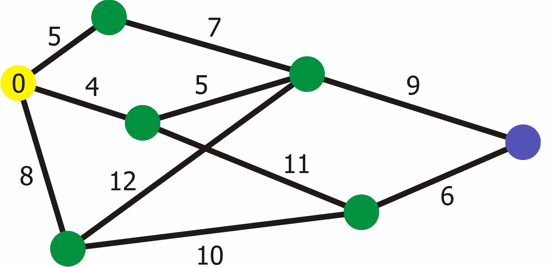
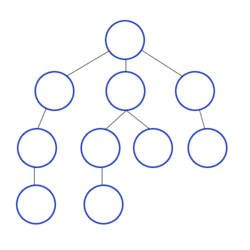
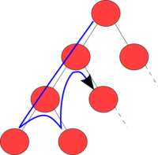

Tipos de grafos?
Ponderados
Não Ponderados
Direcionado
Não Direcionado
Algoritmo de Djisktra
Algoritmo usado para encontrar o menor caminho entre um ponto e outro em grafos.
Criado por Edsger Djisktra (1956)
Complexidade: O([m+n]log n)

Busca em Largura (BFS)

Busca em Profundidade (DFS)

Ordenação Topológica (Apenas explicar, é apenas uma tioria)
Fecho Transitivo (Apenas explicar, é apenas uma tioria)
Algoritmo de Bellman-Ford
Semelhante ao algoritmo de Djisktra
A diferença entre eles é que ele pode encontrar o menor caminho também em grafos que possuem arestas de peso negativo.